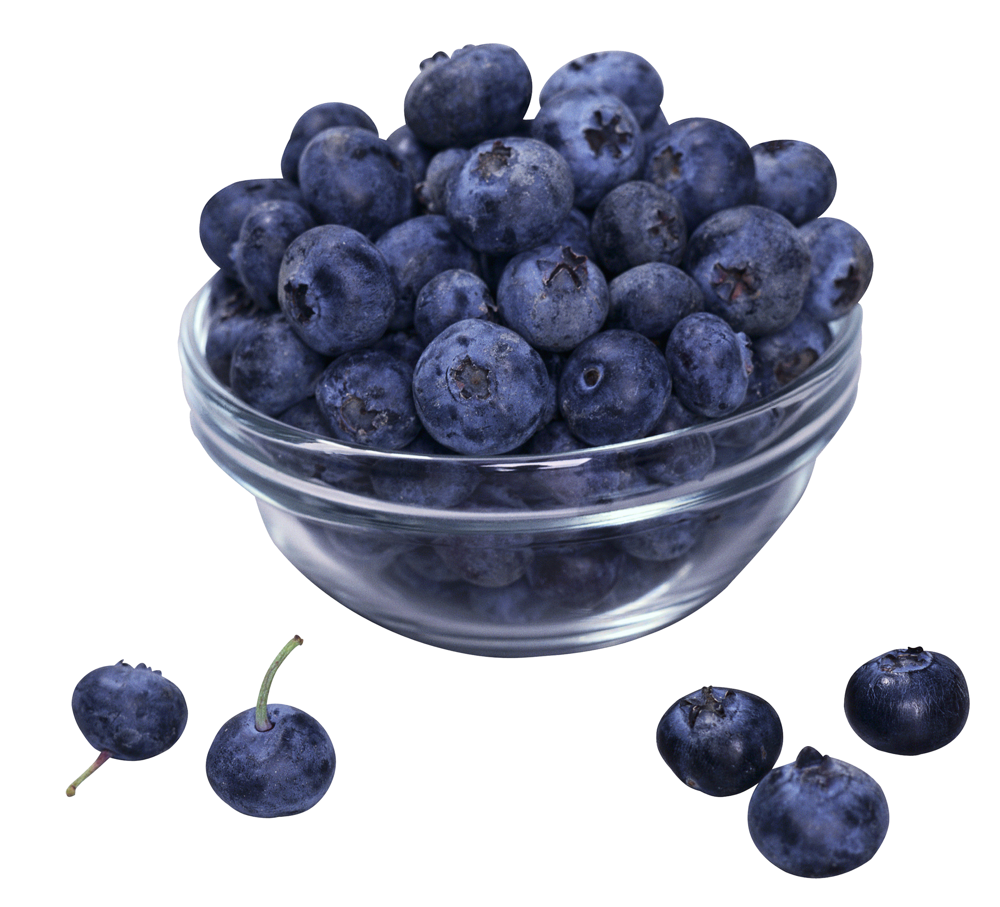

BLUEBERRY MUFFIN CAKE
Ingredients:

SUGAR
2 SPOONS

CHESSE
1 SPOON

EGG
3 PIECES
MILK
1 CUP

FLOUR
2 cups

BLUEBERRY
1 CUP
- Preheat the oven to 375°F/190°C Spray a 9″ Springform pan with nonstick spray and set aside. In a medium bowl combine all the Crumb ingredients with a fork or pastry cutter until they are blended. Set aside. In a large bowl mix together all the cake ingredients except the blueberries and mix until mostly smooth. Fold in the blueberries. Spread the cake batter into the prepared pan and top evenly with the crumb topping. Bake for 40-50 minutes until a toothpick inserted in the center comes out clean. Allow the cake to cool for 10 minutes in the pan. Loosen the edges of the cake from the pan with a butter knife and then remove the sides of the pan. For the glaze mix together all the ingredients together until smooth and then drizzle on top of the cake. Serve warm or at room temperature.